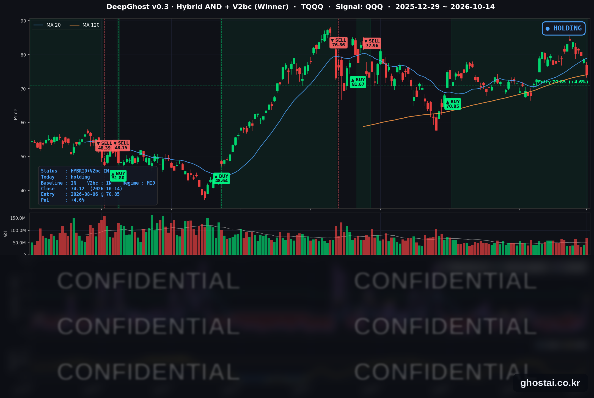

CPI 예상 상회, AI 하드웨어·반도체 급락
· Ghost.AI 데일리 리포트
👻 매일 시그널과 히스토리를 홈페이지에서 한눈에 → www.ghostai.co.kr
회원 페이지 안내 — 회원 가입하시면 커버리지 전 종목의 원본 시그널과 분석 레포트를 매일 확인하실 수 있습니다. 회원 페이지는 블로그·유튜브보다 먼저 업데이트됩니다. 선착순 100명을 모집하고 있으며, 이메일과 필명만으로 가입하실 수 있고 서비스 사용료는 받지 않습니다. 가입 신청 후 운영자 승인을 거쳐 이용하실 수 있습니다.
9월 CPI가 예상을 웃돌아(헤드라인 전년 대비 3.7%, 근원 2.6%) 10월 금리 인상 확률이 22%에서 37%로 올랐고, 나스닥 종합은 1.88% 내려 7월 23일 이후 가장 크게 하락했습니다. 하락은 바클레이즈의 서버·스토리지 업체 투자의견 하향과 AI 인프라 부채 우려가 겹친 AI 하드웨어·반도체·전력 종목에 몰렸고, 반도체 ETF(SOXX)는 4.50% 내려 7거래일 연속 하락했습니다. 반면 필수소비재·헬스케어가 올라 S&P 500 구성종목의 절반가량은 올랐고, 다우는 0.09% 내리는 데 그쳤습니다. TQQQ는 5.95% 내려 8월 6일 진입 이후 하루 하락폭이 가장 컸고, 전략 수익률은 +11.24%에서 +4.62%로 낮아졌습니다. 전략은 49거래일째 보유를 유지했지만, 모델 기준으로 매도 신호까지의 여유는 진입 이후 가장 작아졌습니다.
📊 오늘의 매매 신호
| 항목 | 내용 |
|---|---|
| 오늘 할 일 | ✅ 아무것도 안 해도 됩니다 |
| 포지션 상태 | 📈 TQQQ 보유 중 (IN POSITION) |
| 매수 진입일 | 2026-08-06 (49거래일째) |
| 진입가 → 현재가 | $70.85 → $74.12 |
| 현재 포지션 수익 | +4.62% |
TQQQ 시그널 — IN POSITION
현재 상태: 매수 포지션 유지 중 | 이번 포지션 수익 +4.62%

QQQ가 -1.97% 내리면서 TQQQ는 -5.95% 내린 74.12달러로 마감했습니다. 8월 6일 진입 이후 하루 하락폭이 가장 컸고, 9월 18일 이후 가장 낮은 종가입니다. 전략의 평가수익률은 전 거래일 +11.24%에서 +4.62%로 낮아졌고, 진입 이후 최고였던 10월 6일(+18.91%)보다 14.29%p 낮습니다. TQQQ 종가는 6월 2일 최고 종가(87.22달러)보다 15.02% 낮습니다.
오늘 새 신호는 없었고 전략은 보유를 유지했습니다. 다만 모델 기준으로 매도 신호까지의 여유가 크게 줄어 8월 진입 이후 가장 작은 수준입니다. 다음 거래일 결과에 따라 매도 신호가 나올 수 있고, 보유가 이어질 수도 있습니다. 매도 신호가 나오면 그다음 거래일 미국 장 시가(한국시간 밤 10시 30분) 기준으로 전략 포지션이 정리됩니다.
QQQ는 반도체·AI 하드웨어 비중이 커서 S&P 500(-1.11%)보다 크게 내렸습니다. 다음 확인 지점은 10월 15일 개장 전 TSMC 3분기 실적과 오전 8시 30분(한국시간 밤 9시 30분)에 나오는 9월 PPI·소매판매입니다.
오늘 미국 시장 — 시황 요약
지수 마감
| 지수 | 종가 | 등락률 | 최고 종가 대비 |
|---|---|---|---|
| S&P 500 | 7,718.94 | -1.11% | -1.28% (10/6) |
| 나스닥 종합 | 26,692.87 | -1.88% | -3.29% (10/6) |
| 다우존스 | 51,621.48 | -0.09% | -5.02% (8/5) |
| 러셀 2000 (IWM) | 271.37 | -1.93% | -11.05% (8/14) |
| QQQ (나스닥100) | 728.95 | -1.97% | -4.04% (10/6) |
| TQQQ | 74.12 | -5.95% | -15.02% (6/2) |
| 반도체 ETF (SOXX) | 519.42 | -4.50% | -20.70% (6/22) |
나스닥 종합은 7월 23일, S&P 500과 QQQ는 7월 29일 이후 가장 크게 내렸고, 나스닥 종합과 QQQ는 9월 18일 이후 가장 낮은 종가입니다. 오늘 사상 최고 종가를 낸 지수는 없습니다. 다만 하락은 일부 업종에 몰려, S&P 500 구성종목 493개 중 242개(49.1%)는 올랐고 등락률 중간값은 -0.04%였습니다. IWM은 3거래일 연속 내려 4월 16일 이후 가장 낮은 종가로 마감했습니다. SOXX의 7거래일 연속 하락은 2025년 5월 이후 처음입니다.
국채 금리 동향
| 만기 | 10/13 종가 | 10/14 종가 | 전일 대비 |
|---|---|---|---|
| 3개월 | 4.057% | 4.085% | +2.8bp |
| 5년 | 5.007% | 4.992% | -1.5bp |
| 10년 | 5.217% | 5.190% | -2.7bp |
| 30년 | 5.563% | 5.525% | -3.8bp |
CPI 발표 뒤 3개월물만 올라 2025년 8월 26일 이후 가장 높은 4.085%로 마감했고, 10년물과 30년물은 9월 25일 이후 가장 낮은 수준으로 내렸습니다. 재무부 자료 기준 2년물도 4.79%에서 4.82%로 3bp 올랐습니다. 발표 직후에는 장기 금리도 올랐다가 장 마감 전에 되돌아왔습니다. 단기물이 오르고 장기물이 내려 10년물과 3개월물의 차이는 116.0bp에서 110.5bp로 줄었고, 커브는 역전 없는 우상향입니다. 단기물 상승은 연준의 다음 인상 시점이 앞당겨질 수 있다는 기대를 반영합니다. 장기 금리는 내렸으므로, 오늘 주가 하락은 금리 수준보다 인상 확률 상승과 AI 인프라 업종 재료의 영향이 컸습니다.
연준 발언 & 금리 패스
- 보우먼(Bowman) 부의장 (10/14, IIF 연례회의 대담, CPI 발표 전): 상시 투표권자입니다. 물가가 목표를 웃돌고 있지만, 9월 인상 뒤 경제가 어떻게 움직이는지 지켜볼 시간이 있다고 말했습니다.
- 데일리(Daly) 샌프란시스코 연은 총재 (10/14, 로이터 인터뷰, CPI 발표 후): 올해 투표권은 없습니다. "추가 조정이 필요할 가능성이 그렇지 않을 가능성보다 크지만, 그 시점은 아직 고민하고 있다"고 말했고, 10월 27~28일 회의에서 서둘러 움직일 필요는 없다는 입장입니다.
- 굴스비(Goolsbee) 시카고 연은 총재 (10/14, 야후 파이낸스 인터뷰): 올해 투표권은 없습니다. 9월 CPI를 "실망스럽다"고 했고, "이런 달이 더 나오면 전혀 받아들일 수 없다"고 말했습니다. 서비스 물가가 관세나 유가로 설명되지 않는다며 우려했습니다.
- 베이지북 (10/14 공표): 12개 연은 중 9곳은 경제 활동이 늘었고 3곳은 변화가 없었습니다. "높아진 유가가 모든 연은 보고서에 나타났다"고 적었고, 5개 연은은 AI 투자 뒤 채용을 늦춘 기업이 있다고 보고했습니다.
매파적입니다. CME FedWatch 기준 10월 인상 확률은 CPI 발표 전 22%에서 장 마감 무렵 37%로 올랐습니다. 다만 데일리·보우먼은 10월 회의에서 서두를 필요가 없다는 쪽이었고, 로이터는 대부분의 위원이 다음 인상 시점으로 12월을 더 유력하게 본다고 전했습니다. 정책금리는 3.75~4.00%이고, 위원들의 공개 발언 금지 기간은 10월 17일(토)부터, FOMC는 10월 27~28일입니다.
오늘의 핵심 이슈
- 9월 CPI가 예상보다 높게 나왔습니다. 헤드라인 CPI는 전년 대비 3.7%(예상 3.6%, 8월 3.4%), 근원 CPI는 2.6%(예상 2.5%, 8월 2.4%)로 둘 다 예상을 0.1%p 웃돌았고, 근원 CPI 전월 대비 상승률도 +0.3%로 예상(+0.2%)보다 높았습니다. 휘발유가 전월 대비 9.1% 올라 헤드라인 상승분의 절반 이상을 차지했고, 물가를 반영한 실질 시간당 임금은 전년 대비 0.7% 줄었습니다.
- 지수 하락은 올해 많이 오른 AI 하드웨어·반도체·전력 종목에 몰렸습니다. 바클레이즈가 델·HPE·넷앱의 투자의견을 낮추며 "의미 있는 AI 변곡점은 아직 보이지 않는다"고 밝혀 델이 11.27% 내렸습니다. AI 데이터센터 임대 업체 코어위브의 회사채 금리가 15% 안팎까지 올랐다는 소식에 AI 인프라 부채 우려가 커져 오라클도 8.83% 내렸습니다. S&P 500 구성종목 중 올해 상승률 상위 10% 종목의 등락률 중간값은 -3.99%, 나머지 종목은 +0.13%였습니다.
- 필수소비재·헬스케어가 올라 다우는 0.09% 하락에 그쳤습니다. 필수소비재 35종목이 모두 올랐고(월마트 +3.46%), 헬스케어도 58종목 중 47종목이 올랐습니다(유나이티드헬스 +4.73%). 은행주는 실적 발표 뒤 뱅크오브아메리카(-4.76%)·모건스탠리(-2.75%)가 내렸습니다.
변동성 & 투자심리
VIX는 15.27에서 16.87로 10.48% 올라 9월 16일 이후 가장 높았고, 하루 상승률은 7월 29일 이후 가장 컸습니다. CNN 공포탐욕지수는 전 거래일 44.7에서 32.4로 12.3 내려 "공포" 구간입니다(1주 전 42.1, 한 달 전 31.0). 구성 지표 중 주가 강도와 시장 폭은 "극단적 공포", 정크본드 수요는 "탐욕"입니다. 나스닥이 7월 이후 가장 크게 내리고 VIX가 한 달 만에 가장 높아져 심리는 비관 쪽으로 기울었지만, 하락은 AI 하드웨어·반도체·전력 종목에 집중됐습니다.
매크로 & 원자재
| 품목 | 종가 | 등락률 |
|---|---|---|
| 원유 ETF (USO) | $153.56 | +0.31% |
| 금 ETF (GLD) | $375.99 | -1.49% |
- 유가: 사우디 에너지부는 후티 반군이 다란의 아람코 행정 건물을 공격해 제한적인 화재가 났다고 밝혔고, 이란 혁명수비대는 호르무즈 해협 남쪽에서 컨테이너선이 기뢰에 부딪혀 침몰했다고 발표했습니다. 국제에너지기구(IEA)는 9월 걸프 지역 원유 수출이 전쟁 전의 약 75% 수준을 회복했다고 집계했습니다. USO는 5거래일 연속 올라 9월 18일 이후 가장 높은 종가입니다. 미국 주간 원유재고(EIA) 발표는 휴장 여파로 10월 15일로 하루 늦춰졌습니다.
- 금: GLD는 3거래일 연속 내려 10월 7일 이후 가장 낮은 종가입니다.
주요 종목 동향
| 종목 | 종가 | 등락률 | 비고 |
|---|---|---|---|
| AAPL | 342.96 | +0.50% | 사상 최고 종가 (2거래일 연속), 3거래일 연속 상승 |
| NFLX | 70.57 | +0.16% | 10/20 3분기 실적 |
| AMZN | 254.08 | -1.74% | 3거래일 연속 하락 |
| GOOGL | 347.64 | -1.74% | 10/5 이후 최저 종가 |
| MSFT | 533.69 | -1.80% | 10/13 사상 최고 종가 다음 날 하락 |
| TSLA | 367.16 | -2.15% | 3거래일 연속 하락, 10/21 3분기 실적 |
| QCOM | 172.62 | -2.40% | 9/4 이후 최저 종가 |
| AVGO | 346.25 | -3.10% | 10/1 이후 최저 종가 |
| NVDA | 221.30 | -3.16% | 9/17 이후 최저 종가 |
| META | 737.54 | -3.27% | 전날 2.63% 상승 뒤 하락 |
| MU | 914.13 | -4.10% | 5거래일 연속 하락 |
| INTC | 98.12 | -4.56% | 커버리지 최대 하락, 9/15 이후 최저 종가 |
커버리지 12종목 중 10종목이 내렸습니다. 반도체 5종목(인텔·마이크론·엔비디아·브로드컴·퀄컴)은 AI 하드웨어 종목과 함께 모두 2.4% 넘게 내렸고, 마이크론은 6월 25일 사상 최고 종가보다 24.67% 낮습니다. 장비 업체 ASML은 같은 날 4분기 매출 전망을 142억~152억 유로로 제시했습니다. 대형 플랫폼 종목(메타·마이크로소프트·알파벳·아마존)도 1.7~3.3% 내렸지만 종목별 당일 재료는 확인되지 않았습니다. 애플은 2거래일 연속 사상 최고 종가를 경신했고, 로이터는 애플 시가총액이 처음으로 5조 달러 위에서 마감했다고 전했습니다.
다음 일정 (미 동부시간)
- 10/15(목) 02:00 TSMC 3분기 실적 컨퍼런스 (한국시간 10/15 오후 3시) / 08:30 9월 PPI·소매판매 (한국시간 10/15 밤 9시 30분) / EIA 주간 원유재고 (하루 연기) / 23:30 워시 의장·게오르기에바 IMF 총재 대담 (방콕, 현지 10/16)
- 10/16(금) 08:30 9월 수입물가 / 09:15 9월 산업생산
- 10/17(토) 연준 위원 공개 발언 금지 기간 시작
- 10/20(화) 넷플릭스 3분기 실적(장 마감 후) / 10/21(수) 테슬라 3분기 실적(장 마감 후)
- 10/27~28 FOMC (28일 14:00 결정, 14:30 기자회견)
- 11/10(화) 10월 CPI
다음 거래일 체크포인트 (10/15)
- TQQQ 전략 상태 — 모델 기준으로 매도 신호까지의 여유가 진입 이후 가장 작은 상태입니다. 10월 15일 장 마감 뒤 매도 신호가 나오는지, 보유가 이어지는지 확인합니다.
- 9월 PPI·소매판매 — 이코노미스트들은 PPI를 반영해 연준이 중시하는 9월 PCE 물가 추정치를 고치므로, 10월 인상 확률(37%)이 이 결과에 따라 움직일 수 있습니다. 실질 임금이 줄어든 가운데 소매판매가 소비 둔화를 보여주는지도 봅니다.
- TSMC 실적 — 7거래일 연속 내린 반도체 업종의 흐름이 바뀌는지 확인합니다.
Ghost.AI — Quantitative AI Investment
Model: DeepGhost v0.3 | Transformer-Based Deep Learning
Coverage: 14 tickers | Updated every trading day after US market close
⚠️ 본 자료는 정보 제공 목적으로만 작성되었으며 투자 권유가 아닙니다. 모든 투자의 책임은 투자자 본인에게 있습니다. 과거 성과가 미래 수익을 보장하지 않습니다.
[유의사항]
- 본 서비스는 불특정 다수를 대상으로 발행되는 단방향 정보 제공 서비스이며, 투자자 개인의 재산 상황·투자 목적·위험 선호도를 반영한 개별 투자 조언이 아닙니다.
- 고스트에이아이 주식회사는 고객과 쌍방향 의사소통(개별 상담, 맞춤형 자문 등)을 제공하지 않습니다.
- 본 콘텐츠는 투자 권유 또는 매매 주문의 청약·청약의 권유에 해당하지 않으며, 최종 투자 판단 및 그에 따른 손익의 책임은 전적으로 투자자 본인에게 있습니다.
고스트에이아이 주식회사